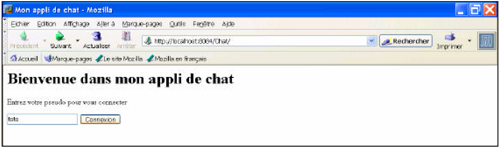
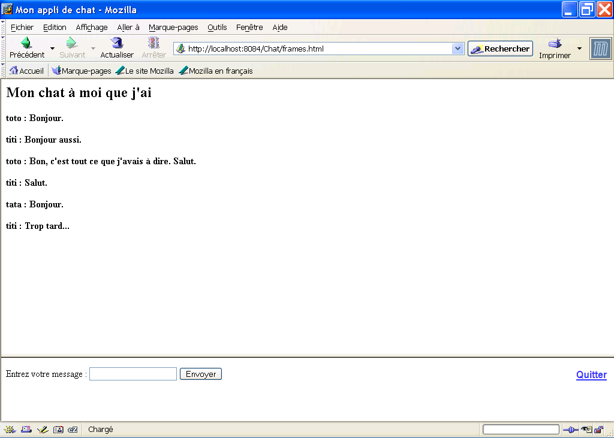

TP 2 : technologies côté serveur (servlets/JSP)
Objectifs pédagogiques
- Se familiariser avec la programmation côté serveur en Java : servlets et JSP
- Concevoir une application Web complète et fonctionnelle comportant plusieurs couches distinctes
- Gérer les sessions
- Manipuler les headers HTTP
Date de rendu
Ce TP est à réaliser et à pusher dans la forge pour le 4 novembre 2018 à 23h59.
Il vous servira de base pour les TPs suivants.
Outils
- Logiciels installés sur les machines de TP : Navigateurs Web, EDI NetBeans / Eclipse / IntelliJ
- Logiciels libres que vous pouvez installer chez vous : idem.
- Serveur (Apache) + moteur de servlets Tomcat : vous trouverez la version 9 de Tomcat en ligne ici ou en local dans le répertoire "enseignement/Installs" de ma page. À décompresser dans le répertoire temporaire des machines de TP.
Attention : pour installer Tomcat à partir de ce zip, vous devrez modifier la configuration (répertoire conf de votre installation) pour :
- ajouter un utilisateur manager (etudiant/etudiant) dans le fichier tomcat-users.xml, que votre IDE utilisera pour contrôler le serveur.
- Modifier l'encodage par défaut (ISO-8859-1) utilisé pour décoder les paramètres des requêtes :
- dans le fichier Server.xml, rajouter à l'élément Connector les attributs URIEncoding="UTF-8" et useBodyEncodingForURI="true" (voir doc ici), et
- dans le fichier web.xml décommenter les deux blocs qui spécifient le setCharacterEncodingFilter (voir doc là).
Description de l'application
Il s'agit d'une application Web de gestion de fils de discussions (chat) simple qui fonctionnera derrière un serveur Apache et un moteur de servlets et de JSP (inclus dans Tomcat).
Fonctionnalités
Les tâches à réaliser sont les suivantes :
- Permettre à chaque utilisateur de saisir un pseudonyme (pas de gestion des mots de passe).
- Permettre à chaque utilisateur de saisir un message textuel.
- Mémoriser les interventions de tous les utilisateurs, précédées de leurs pseudos.
- Les afficher aux utilisateurs.
- Se déconnecter.
Architecture de l'interface et des composants de
l'application
Accueil
La page d’accueil (index.html, voir
figure
ci-dessous) contient un formulaire demandant un pseudo à
l’utilisateur. Le pseudo est saisi dans un champ texte, qui est
envoyé par la méthode POST à une
servlet, appelée Init.

Initialisation
La servlet Init effectue un traitement
de la requête (voir plus loin), et redirige l’utilisateur sur une page HTML appelée interface.html.
Chat
Cette interface est affichée pendant le fonctionnement "normal" de l'application (voir figure ci-dessous). Elle est reponsable des fonctionnalités suivantes :
- Affichage des messages : cette page statique délègue à une page JSP nommée Messages.jsp la gestion et l'affichage des messages envoyés par les différents utilisateurs (voir plus loin) ; pour cela, elle contient un élément iframe qui affiche Messages.jsp et est placé en haut de l'écran, sur toute la largeur de la fenêtre
Attention, pour pouvoir adresser cette page JSP depuis un autre élément de la page interface.html, il faut lui donner un nom (attribut name) ; vous l'appelerez "messages"
- Saisie et envoi de nouveaux messages : interface.html contient un formulaire basique qui permet la saisie d'un message et son envoi par POST à la JSP "messages" ; cela provoque la mémorisation du nouveau message et l'actualisation de l'affichage de ceux-ci
- Déconnexion : quand l'utilisateur veut quitter l'application, il clique sur un lien le renvoyant vers une servlet nommée Deco

Remarques :
- affichage des messages : la totalité des messages échangés sont affichés, avec leurs auteurs ; pour permettre le chargement des nouveaux messages sans renvoi de données de la part de l'utilisateur, cet affichage est actualisé toutes les 5 secondes,
- On ne se préoccupe pas ici de la sauvegarde des messages ; leur durée de vie est la même que celle de l'application déployée sur le serveur.
Deconnexion
La servlet Deco est chargée de déconnecter l'utilisateur (voir plus bas) et de le renvoyer vers la page d'accueil.
Mise en place du projet
Les différentes opérations ci-dessous nous permettront de récupérer correctement votre TP et les informations nécessaires à votre notation. Merci de veiller à ce qu'elles soient correctement réalisées, sans quoi vous risquez soit d'être sanctionnés, soit que votre projet ne soit pas corrigé.
- Projet forge : Créez un nouveau projet sur la forge, et remplissez dans Tomuss la case indiquée "URL_Projet_forge_TP2_(complète)" avec l'URL de base de votre projet
- Rapporteurs : rajoutez vos enseignants (Lionel Médini, Romuald Thion) comme reporters de votre projet forge.
- Tags de versions : durant ce TP, vous aurez plusieurs versions de la même application à développer. Vous "pousserez" toutes ces versions dans la branche "master" de votre projet forge. À la fin de chaque partie du TP, taggez le dernier commit à l'aide du numéro de cette partie (ex : "TP2 - 3.1").
- Readme : au fur et à mesure de ce TP, indiquez dans le fichier README.md les différents choix d'implémentation que vous aurez faits, pour les questions où vous avez plusieurs alternatives. Vous y mentionnerez également les détails que vous jugez utiles à connaître pour le correcteur (bibliothèques supplémentaires utilisées, dernière question traitée, etc.).
Configuration du projet Maven
Dans ce TP, vous allez travailler dans un projet Maven Webapp. Pour créer votre projet, vous avez plusieurs possibilités :
Attention : Maven ne vous crée pas tout seul le répertoire src/main/java. À vous de le créer car c'est dans ce répertoire que vous allez devoir mettre vos fichiers Java. Si votre IDE indique src/main/resources dans la configuration des fichiers sources de votre projet, supprimez ce répertoire de la configuration.
Bien entendu, dans vos classes Java, n'oubliez pas de déclarer le package dans lequel elles sont situées.
Ensuite, vous devrez ajouter dans votre projet une dépendance sur l'API servlet et sur la bibliothèque JSTL de tags JSP. Pour cela, rajoutez le code suivant dans votre pom.xml :
<dependency>
<groupId>javax</groupId>
<artifactId>javaee-web-api</artifactId>
<version>8.0</version>
<scope>provided</scope>
</dependency>
<dependency>
<groupId>javax.servlet</groupId>
<artifactId>jstl</artifactId>
<version>1.2</version>
</dependency>Configuration pour l'utilisation d'Expression Language en JSP
Si vous voulez utiliser EL dans vos JSP, il faut que votre web.xml corresponde à l'API Servlet 2.4 ou supérieure. Exemple de code de l'élément racine :
<web-app
xmlns:xsi="http://www.w3.org/2001/XMLSchema-instance"
xmlns="http://java.sun.com/xml/ns/javaee"
xmlns:web="http://java.sun.com/xml/ns/javaee/web-app_3_0.xsd"
xsi:schemaLocation="http://java.sun.com/xml/ns/javaee http://java.sun.com/xml/ns/javaee/web-app_3_0.xsd"
version="3.0">Configuration du plugin Tomcat7 de Maven
Pour vous faire gagner du temps dans vos déploiements, vous pouvez ajouter le plugin Tomcat Maven Plugin, en utilisant cette procédure d'installation.
Conception basique de l'application
Pages statiques
Pour vous faire gagner du temps, les deux pages statiques index.html et interface.html vous sont données ici.
Initialisation
Créez ensuite une nouvelle servlet Init. Cette servlet répondra aux requêtes en GET ou en POST, et effectuera les traitements suivants :
- Pour les appels en GET : redirection sur index.html
- Pour les appels en POST :
- création / récupération de la session de l'utilisateur
- récupération du paramètre de la requête contenant le pseudo saisi par l'utilisateur
- création d'un attribut de la session ayant pour valeur ce pseudo
- redirection vers interface.html
En cas d'erreur dans l'une des étapes de ce processus, l'utilisateur sera redirigé vers index.html.
Interface de gestion des messages
La page Messages.jsp permet de gérer les messages. Pour cela, elle possède une variable globale de type List<Message> (à vous de créer la classe Message). Messages.jsp a deux fonctions distinctes :
- Réception et mémorisation des messages envoyés par POST : à la réception d'une requête POST, la page récupère le texte du message dans le paramètre de la requête ad hoc, ainsi que le nom de son auteur dans l'attribut de session stocké par Init. Elle crée alors un nouveau message, qu'elle place en queue de liste.
- Affichage des messages : à la réception d'une requête (GET ou POST), la page parcourt la liste et affiche tous les messages avec la mise en forme qui vous plaîra. En l'absence d'envoi de données de la part du client, cet affichage s'actualisera toutes les 5 secondes.
Indications :
- pour l'actualisation automatique de la page, vous utiliserez l'en-tête HTTP "Refresh"
- l'envoi d'un formulaire vers un iframe se fait en utilisant l'attribut target,
- bien entendu, faites en sorte que vos documents (statiques et générés) soient en XHTML strict (sauf pour celui qui définit les iframes) et que des feuilles de style CSS leur soient associées,
Ajout de salons
Vous allez maintenant modifier votre application pour qu'elle prenne en charge plusieurs "salons de discussion".
- dans le formulaire de connexion (index.html), ajoutez un champ permettant d'indiquer un nom de salon
- pour l'instant, placez le nom du salon dans un attribut de session
- faites en sorte que Messages.jsp puisse gérer plusieurs listes de messages, correspondant aux différents salons (déclenchez la création d'une liste à chaque nouveau nom de salon)
Déconnexion
Créez une servlet permettant de gérer la déconnexion de l'utilisateur en supprimant ses attributs de session et faites pointer le lien de la page de interface.html dessus.
À ce stade, vous avez réalisé une application de chat basique, mais fonctionnelle.
Refactoring de votre application
Une fois la session de chat lancée, la totalité de la logique applicative est gérée par Messages.jsp, ce qui n'est pas très satisfaisant.
Pattern MVC
Refactorez votre application pour appliquer un pattern MVC. Vous avez le choix entre 2 solutions :
MVC Pull-based
Dans cette solution :
- Le code du contrôleur sera dans une servlet. Le contrôleur se contentera d'aiguiller les requêtes vers les JSP vues.
- Le code de la vue sera dans des JSP. Chaque JSP est responsable d'interroger les objets du modèle pour se mettre à jour.
- Le code du modèle sera dans des JavaBeans. Les scopes de ces beans seront appropriés à la durée de vie des informations qu'ils contiennent.
Aide : Mise en place des JavaBeans
Créer une classe GestionMessages qui contiendra le modèle de votre application et qui possèdera les caractéristiques suivantes :
- un constructeur sans paramètre
- une Map<String, ArrayList<Message>> qui sera stockée dans une variable statique, pour que toutes les instances de la classe puissent partager les messages de tous les salons
- un accesseur permettant à la JSP de lui injecter le nom du salon, pour qu'il ne manipule en interne que la liste des messages de ce salon
- les accesseurs standard nécessaires à l'ajout d'un message et à la récupération de l'ensemble des messages d'un salon
- un accesseur permettant de récupérer le nombre total de messages échangés dans un salon
Vous utiliserez cette classe en tant que JavaBean dans Messages.jsp, à l'aide de <jsp:useBean>. À vous de déterminer le scope de ce bean. Testez.
MVC push-based
- Le code du contrôleur sera dans une servlet. Le contrôleur est responsable de déclencher les changements d'états du modèle, puis de récupérer les données et d'aiguiller les requêtes vers les JSP vues.
- Le code de la vue sera dans des JSP. Chaque JSP recevra en attribut de requête les données du modèle transmises par le contrôleur.
- Le code du modèle sera dans des classes Java connues du contrôleur.
Inclusion/transfert de requêtes
Vous allez maintenant créer deux nouvelles pages JSP :
- Stockage.jsp, qui ne sera appelée que pour des requêtes POST, et qui réalisera la partie "Réception et mémorisation des messages envoyés par POST",
- Affichage.jsp, qui réalisera la partie "Affichage des messages".
Dès lors, Messages.jsp peut se borner à tester la méthode utilisée et à utiliser les actions <jsp:forward> et <jsp:include>. À vous de déterminer quelle st la JSP incluse et quelle est celle à qui la requête est forwardée...
Pattern chaîne de responsabilité
Remplacez la servlet Init par un Filter, qui vérifie, quelle que soit l'URL de la page appelée, que l'utilisateur est connecté (qu'il possède un login), avant de lui permettre d'accéder à l'application. Si ce n'est pas le cas, il sera redirigé vers le formulaire de connexion. Pour cela :
- Créez une classe qui implémente l'interface javax.servlet.Filter
- Reprenez (et adaptez) le contenu de la méthode de service de la servlet Init dans celle de votre filtre :
- Si l'utilisateur possède un pseudo : poursuivez le traitement à l'aide de la méthode chain.doFilter()
- Sinon : si la requête provient du formulaire de connexion, traitez-la comme le faisait la servlet Init
- Sinon : renvoyez un code de redirection dans la réponse pour que l'utilisateur aboutisse au formulaire de connexion
- Déclarez ce filtre dans le fichier de configuration de l'application
Attention : le filtre ne doit pas bloquer l'accès au formulaire de login. Vous configurerez votre application pour qu'il soit appliqué à toutes les URL sauf celle de ce formulaire.
À ce stade, vous avez refactoré votre application en utilisant certains patterns vus en Génie Logiciel. Vous avez rendu le code plus lisible, en utilisant les différents éléments de l'API Java EE Web à bon escient.
Amélioration de l'application
L'état actuel de votre application est le suivant : toutes les 5 secondes, chaque client interroge le serveur, qui parcourt alors toute la liste de messages et re-génère dynamiquement un nouvel affichage contenant la totalité des messages enregistrés, qui sera renvoyé à chaque client via le réseau. Si le nombre d'utilisateurs est grand et/ou s'il y a de nombreux messages enregistrés dans la base, ce fonctionnement peut vite représenter une charge de travail importante pour le serveur, ainsi qu'une consommation inutile de bande passante réseau.
L'objectif de cette partie est d'améliorer le processus de récupération et d'affichage des messages échangés par les différents utilisateurs. Pour cela, vous allez permettre à votre application de déterminer si elle doit recalculer l'affichage des messages pour un client, ou s'il n'y a pas lieu de le faire. Deux possibilités sont à votre disposition.
Utilisation des en-têtes HTTP
La plupart des clients renvoient au serveur un en-tête HTTP If-Modified-Since, indiquant la date de leur dernier chargement d'une page. Si cette date est postérieure à celle du dernier POST reçu, aucun nouveau message n'est disponible. Plutôt que de renvoyer une réponse HTTP contenant une page complète, il suffit de renvoyer juste un en-tête HTTP, avec le code de statut 304 indiquant au client que la page n'a pas été modifiée.
Pour cela :
- vérifiez que votre serveur envoie bien au client un en-tête Last-Modified à la génération de la réponse (sur les versions récentes de Tomcat, le header est positionné par défaut sur les pages HTML et pas sur les JSP) ; sinon, rajoutez-le dans Affichage.jsp
- vérifiez que votre client vous renvoie bien cette valeur dans un en-tête If-Modified-Since lors de la requête d'actualisation de la page Messages.jsp
- rajoutez un attribut permettant de stocker la valeur de dernière modification de la liste des messages dans le contexte de l'application et faites en sorte que Stockage.jsp actualise sa valeur à chaque appel
- lors de l'appel en GET de Messages.jsp, comparez la valeur de l'en-tête If-Modified-Since reçu avec celle de l'attribut du contexte applicatif et réagissez en conséquence (génération de la page ou code de statut 304).
Il est possible que votre navigateur ne prenne plus en compte le header Refresh après réception d'un code de retour 304. Ne passez pas trop de temps à essayer de régler ce problème, qui ne se posera plus dans les versions ultérieures.
Utilisation des cookies
Si le numéro du dernier message mémorisé (i.e. le nombre total de messages) est égal à celui du dernier message envoyé à un client (i.e. le nombre total de messages au moment où le serveur lui a servi la réponse), cela signifie qu'aucun message n'est arrivé depuis la dernière requête du client. Il est donc inutile de lui renvoyer la page.
- rajoutez / updatez un cookie chez votre client indiquant le numéro du dernier message obtenu lors de l'envoi d'une réponse par Affichage.jsp
- lors de la réception d'une requête GET par Messages.jsp, testez l'existence de ce cookie et comparez sa valeur au nombre total de messages mémorisés
- réagissez en conséquence (voir plus haut).
Indication :
Utilisez le getter de GestionMessages permettant de récupérer le nombre total de messages.
Vous avez maintenant commencé l'optimisation de votre application en termes de charge serveur et de bande passante réseau. Ce travail sera poursuivi lors des TPs REST et AJAX.